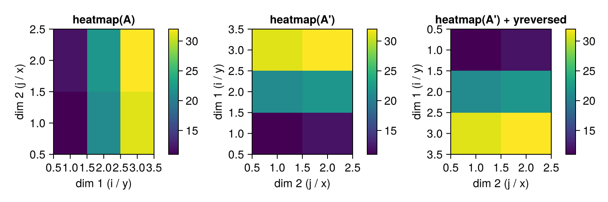
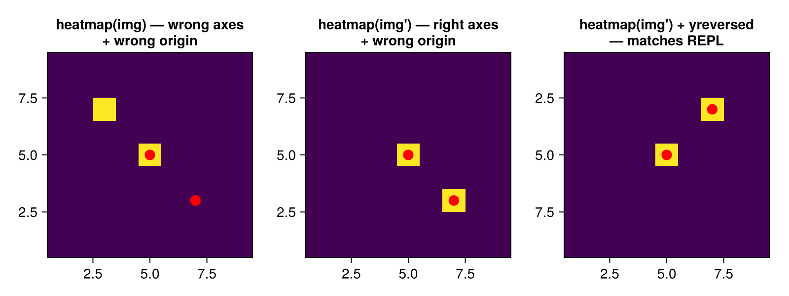

Pixel Coordinate Conventions
CrowdPhot uses image-style coordinates on top of Julia matrices:
image[y, x]Here y is the first matrix dimension and x is the second matrix dimension. This applies to source positions, detected peaks, centroids, PSF model centers, fitting kernels, simulation code, and internal calculations.
The executable rule is:
idx = CartesianIndex(i, j)
y = idx[1]
x = idx[2]A Concrete Matrix
Consider this rectangular Julia matrix:
A = [11 12;
21 22;
31 32]Julia prints this as:
3×2 Matrix{Int64}:
11 12
21 22
31 32Indexing is:
A[1, 1] == 11
A[2, 1] == 21
A[3, 1] == 31
A[1, 2] == 12
A[2, 2] == 22
A[3, 2] == 32Traditional matrix language calls the first index the row and the second index the column:
A[row, col]CrowdPhot maps these to coordinates as:
A[y, x]so A[2, 1] means y = 2, x = 1.
Memory Layout
Julia arrays are column-major. Values with adjacent first indices are contiguous in memory:
vec(A) == [11, 21, 31, 12, 22, 32]For performance, the first index should vary fastest:
for x in axes(image, 2)
for y in axes(image, 1)
image[y, x]
end
endThe easy rule is:
In Julia, the inner loop should usually be over the first index.
For CrowdPhot, this becomes:
Hold
xfixed, sweepy, then move to the nextx.
This is consistent with Julia's memory layout and with the package coordinate mapping.
Display Is Not Memory Layout
The Julia REPL prints matrices as tables. In the printed display of A, A[2, 1] appears one row below A[1, 1]. This makes the first index look like a vertical coordinate, which matches the convention:
i = row = vertical = y
j = col = horizontal = xThat convention leads to:
image[y, x]This is the convention CrowdPhot uses.
Plotting Conventions
Different plotting libraries display matrices with different spatial interpretations. The REPL display and Makie's heatmap disagree about which matrix dimension is the horizontal axis.
The REPL vs Makie
Consider the same 3×2 matrix from earlier:
A = [11 12;
21 22;
31 32]The REPL prints this with the first dimension as rows (vertical) and the second as columns (horizontal):
3×2 Matrix{Int64}:
11 12
21 22
31 32So A[1,1] = 11 is top-left, A[3,2] = 32 is bottom-right, and the display is 3 rows tall by 2 columns wide.
Makie's heatmap(A) maps the first matrix dimension to the horizontal (x) axis and the second to the vertical (y) axis, with the y-axis increasing upward (standard Cartesian). This produces a display that is both transposed and vertically flipped relative to the REPL:
using CairoMakie
A = [11 12;
21 22;
31 32]
fig = Figure(size = (750, 250))
ax1 = Axis(fig[1, 1]; title = "heatmap(A)",
xlabel = "dim 1 (i / y)", ylabel = "dim 2 (j / x)")
hm1 = heatmap!(ax1, A)
Colorbar(fig[1, 2], hm1)
ax2 = Axis(fig[1, 3]; title = "heatmap(A')",
xlabel = "dim 2 (j / x)", ylabel = "dim 1 (i / y)")
hm2 = heatmap!(ax2, A')
Colorbar(fig[1, 4], hm2)
# Both are wrong relative to the REPL:
# - heatmap(A) has axes swapped (dim 1 horizontal, dim 2 vertical)
# - heatmap(A') has dim 1 vertical but row 1 at the bottom
ax3 = Axis(fig[1, 5]; title = "heatmap(A') + yreversed",
xlabel = "dim 2 (j / x)", ylabel = "dim 1 (i / y)",
yreversed = true)
hm3 = heatmap!(ax3, A')
Colorbar(fig[1, 6], hm3)
# yreversed = true puts row 1 at the top — now it matches the REPL.
fig
To match the REPL display exactly — first dimension vertical (top to bottom), second dimension horizontal (left to right) — you need both steps:
- Transpose the matrix (
A') so that the first dimension becomes the vertical axis. - Reverse the y-axis (
yreversed = true) so that the first row appears at the top, matching the REPL whereA[1,1]is top-left.
A = [11 12; 21 22; 31 32]Overlaying source positions
When plotting detected sources on top of an image with Makie, transposing the matrix restores alignment. Suppose we have a 9×9 image with sources at pixel coordinates $(y, x) = (5, 5)$ and $(y, x) = (3, 7)$:
using CairoMakie
# A small image with a bright pixel marking each source position.
img = zeros(9, 9)
img[5, 5] = 1.0 # y=5, x=5 (center)
img[3, 7] = 1.0 # y=3, x=7 (off-center)
ys = [5.0, 3.0] # row coordinates (CrowdPhot convention)
xs = [5.0, 7.0] # column coordinates
fig = Figure(size = (800, 300))
ax1 = Axis(fig[1, 1]; title = "heatmap(img) — wrong axes\n+ wrong origin",
aspect = 1)
heatmap!(ax1, img)
scatter!(ax1, xs, ys; color = :red, markersize = 15)
ax2 = Axis(fig[1, 2]; title = "heatmap(img') — right axes\n+ wrong origin",
aspect = 1)
heatmap!(ax2, img')
scatter!(ax2, xs, ys; color = :red, markersize = 15)
ax3 = Axis(fig[1, 3]; title = "heatmap(img') + yreversed\n— matches REPL",
aspect = 1, yreversed = true)
heatmap!(ax3, img')
scatter!(ax3, xs, ys; color = :red, markersize = 15)
# With img' and yreversed=true:
# - dim 1 (y) is vertical, row 1 at top
# - dim 2 (x) is horizontal, column 1 at left
# - scatter! takes (x, y) so xs → horizontal, ys → vertical — correct.
fig
When plotting with Makie, transpose the image matrix and reverse the y-axis to match the REPL display, keeping coordinates in CrowdPhot's native (y, x) order:
heatmap(image'; yreversed = true) # rows top→bottom, columns left→right
scatter!(xs, ys) # scatter! takes (x, y), matching xs, ysThis makes the displayed image look like the REPL printout and keeps the coordinate order consistent throughout the workflow.
Matplotlib / imshow
Matplotlib's imshow treats the first array dimension as vertical and the second as horizontal — matching the REPL by default. With origin="upper", [0, 0] is top-left. With origin="lower", [0, 0] moves to bottom-left. Either way, no transpose is needed.
The important point is that plotting is a presentation choice. The internal CrowdPhot rule remains:
image[y, x]Comparison to Other Conventions
photutils / astropy
photutils (and the astropy ecosystem it builds on) uses (x, y) as the canonical coordinate order — function signatures like model.evaluate(x, y) and centroid returns like (x, y). At the same time, Python / numpy stores arrays in [row, col] order, so pixel access is image[yi, xi].
These are treated as separate domains: coordinates are (x, y), array indexing is (yi, xi). Internally, photutils sometimes computes in array-index order and then explicitly reverses the result (e.g. [::-1] in centroid_com) to return (x, y).
CrowdPhot takes the opposite approach: the array layout is primary, so function signatures and returns use (y, x) to match image[i, j] indexing. Note that photutils' image[yi+1, xi+1] and CrowdPhot's image[y, x] refer to the same array element (after accounting for the fact that Python is 0-indexed while Julia is 1-indexed). Both packages store data the same way; they only disagree about whether function signatures should follow the array (y,x) or the mathematical (x, y) convention.
FITS / WCS / IRAF / DS9 / SourceExtractor
FITS pixel coordinates use (x, y) order with 1-based indexing: pixel (1, 1) is the center of the first pixel in the data array. When a FITS file is read into Julia (e.g. with FITSIO.jl), the data array is loaded so that image[1, 1] is that same FITS pixel (1, 1) — the array is not re-indexed or flipped. Our convention agrees with these conventions in what x (column) and y (row) mean; however, we write most of our function calls in (y, x) order for consistency with how data matrices are indexed.
The "bottom-left" property of FITS — that pixel (1, 1) corresponds to the bottom-left corner of the image on the sky — is encoded in the WCS keywords (CRPIX, CD matrix, etc.), not in the pixel coordinate values themselves. The Julia REPL displays image[1, 1] at the top of the printout, but this is a matrix-display convention; it does not change the physical pixel that the index refers to.